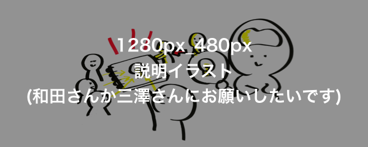

グラフィックレコーディングとは？
グラフィックレコーディングとは、会議での議論やカンファレンスの流れを視覚化し、参加者へ共有する手法です。参加者の思考発話内容をリアルタイムで視覚的にわかりやすく伝えることができるので、アイディア創発の場や、会議での合意形成を促します。
グラフィックレコーディング勉強会とは
わたしたちは、「グラフィックレコーディングを通して、ヒトの想いと想いをつなげる架け橋となるような場を、世の中に提供していきたい」と考え、集まった有志の団体です。いつの日か、グラフィックレコーディングが暮らしの中で当たり前のように使われる日を夢見て、活動を推進しています。楽しみながらグラフィックレコーディングを学び、トレーニング方法を体験できる、独自のワークショップを提供しています。
グラレコ勉強会のワークショップ

「ヒトの想いを見えるようにしたい、つなぎたい」。グラフィックレコーディング勉強会のワークショップは、そんな願いをもつ多くの団体・企業から注目されています。
ワークショップは大きくわけて2種類あります。「グラフィックレコーディングをやってみたい」という方向けの初級編、「グラフィックレコーディングを活かしたい」という方向けの活用編です。
プログラムを開発しているのは、ワークショップデザイナーやグラフィックレコーダー、プロのファシリテーター。独自にグラフィックレコーディング習得メソッドを開発しています。「楽しい！」「続けたい！」という参加者のみなさんに想いを持ち帰ってもらい、毎日の活動につなげられるようなプログラムを提供しています。
次回のイベント
{% include event-info.html %}活動実績
-
{% for post in site.posts limit:5 %}
-
{{ post.title }}
- 日時
- {{ post.date | date: "%Y/%-m/%-d" }}
- レベル
- {{ post.categories }}
- 会場
- {{ post.place }}
- 依頼元
- {{ post.company }}
{% endfor %}